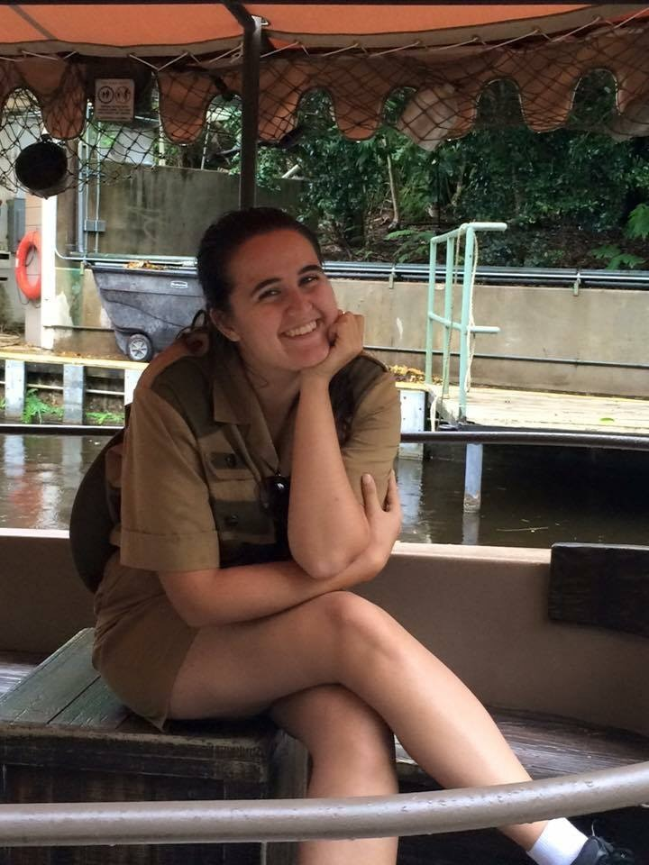

Kelsey Sample

Summary
I am an Account Manager with a history in the Digital and Hospitality Industries. I have basic HTML experience.
Work Experience
Accesso Technology Group
- Client Success Manager | April 2018 - Present
- Serve as primary Account Manager and champion for portfolio of Digital E-Commerce stores to ensure Client and Guest satisfaction.
- Collaborate on high priority projects throughout the product lifecycle; helping ensure new projects align with the product roadmap.
- Regularly evaluate business analytics and hard data to identify opportunities and product strategies for portfolio.
- Client Solutions Specialist | July 2017 - April 2018
- Triage and troubleshoot Client concerns through verbal and written communication to enhance the Guest experience.
- Write test cases and acceptance criteria to test new and updated functionality loaded to Clients' applications, analyzing results, and providing use cases when defects are found.
- Adapt to job requirements by developing technical skills and learning multiple systems and applications, including SQL, JIRA, Excel, and Opsgenie.
The Walt Disney Company
- Business Operations Associate | January 2016 - July 2017
- Work with Guests, Cast Members, and different Lines of Business to successfully deliver media.
- Operate in an environment that requires flexibility and the ability to quickly learn new tasks and priorities in a fast-paced environment.
Skills
Leadership | Partnership | Decision Making | Prioritization | Planning | Problem-Solving
Education
Bachelor of Business Administration, Management